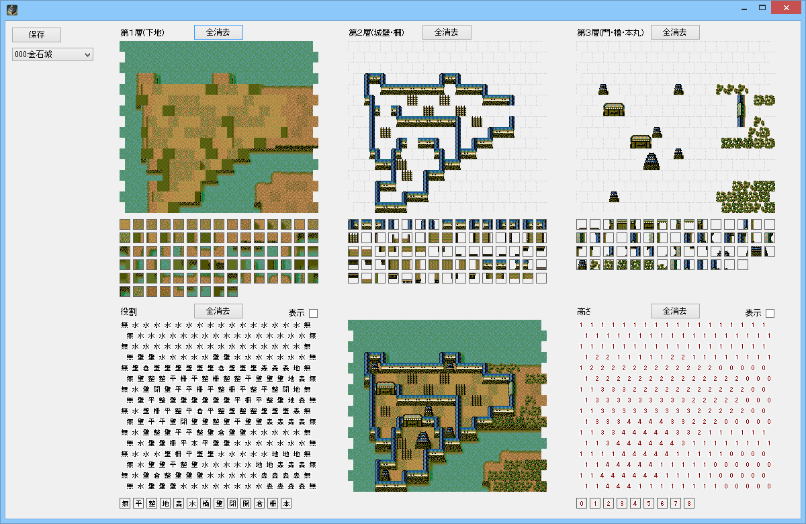
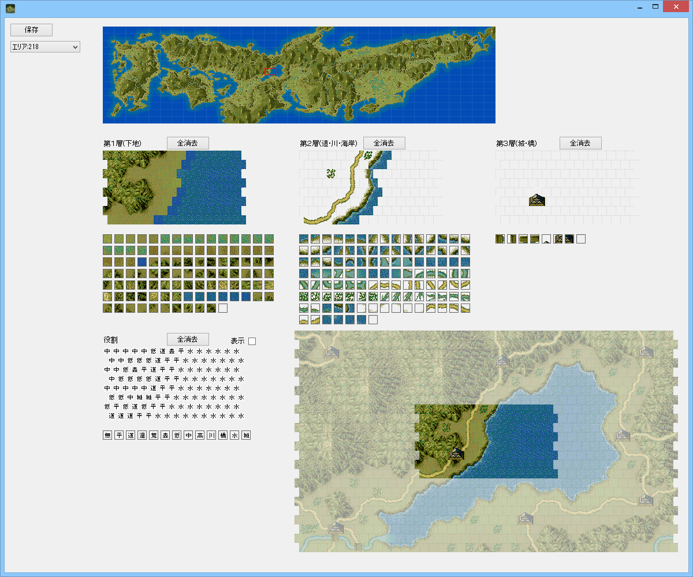

「城マップ」や「野戦マップ」を編集するためのエディタとなります。


天翔記アップローダーに有志が作った城データがアップされています。
「***.castle」といったファイルは、このヘックスマップエディタのうち、城マップエディタで読み込むことが出来ます。
「***.castle」とは「１つの城のデータ」というだけであり、「どこの城」と決められたデータではありません。
よって、どの城のデータとして読み込んでもかまいません、自由です。
天翔記アップローダーに有志が作った野戦データの不備部を修正したものがアップされています。